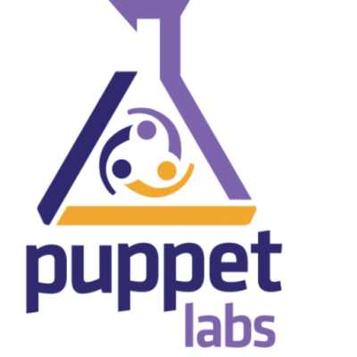

Automatisation du poste de dev
Chroot/Ansible/Puppet/Vagrant
Chroot ?
“chroot (change root) est une commande des systèmes d'exploitation UNIX permettant de changer le répertoire racine d'un processus de la machine hôte.”
Pourquoi une chroot ?
- Temps d'installation d'un poste de dév long
- Upgrade/Migration de son poste ?
- Uniformisation des postes
- Simplicité
- Portabilité
Première solution
Configurer une chroot à la main
Configurer une chroot à la main
Les étapes
- Créer une chroot
- Essayer de dérouler le wiki
- Packager la bête
- La déployer sur les postes
Si quelque chose évolue, tenter de mettre à jour la chroot et la repackager
Configurer une chroot à la main
- Les plus
- Rapide
- Facile
- Les moins
- Maintenabilité bof
- Volumineux ~Xgo
Conseil : à tester sur des petits projets
Alternative
Chroot minimaliste avec configuration automatisée.
- Les plus
- Commitable
- Évolutif
- Transportable
- Léger
- Les moins
- Quelques configurations parfois tricky
- Temps de mise en place
Quel outil choisir ?
 VS 
Puppet
2 modes : Client/Server ou standalone
Installation dans la chroot
Puppet en standalone
package {['man-db', 'wget', 'ngrep', 'tree', 'curl',
'bash-completion', 'language-pack-fr',
'gitk', 'bc', 'ccze',
'vim', 'vim-puppet','unzip','time',
'logrotate', 'sysstat', 'tmux', 'xclip', 'firefox',
'libcanberra-gtk0', # Remove warning when launching firefox, better theme
'x11-xkb-utils','xinput', 'x11-xserver-utils', 'xsltproc', 'msmtp',
'sshfs',
'meld','scite','make', 'python-docutils',
'rdesktop', 'x11vnc', 'vinagre', 'ack-grep', 'imagemagick',
'feh',
'python-setuptools', 'pdfgrep', 'evince', 'python-demjson',
'telnet', 'gnome-keyring', 'pssh'
]: ensure => installed ,}
package { "git-svn": ensure => installed }
Puppet en standalone
class intellij ( $username ) {
$idea_location="/home/nfc/applications"
$idea_archive="ideaIC-12.1.tar.gz"
exec { "mkdir -p $idea_location &&
tar xzf /tmp/$idea_archive -C $idea_location &&
chown -R $username:$username $idea_location" :
alias => "install_idea",
unless => "test -d $idea_location/idea-IC-129*",
require => Download_File["download_idea"],
}
download_file { "$idea_archive" :
alias => "download_idea",
site => "http://download-ln.jetbrains.com/idea",
cwd => "/tmp",
unless => "test -d $idea_location/idea-IC-129*
|| test -d /tmp/$idea_archive",
}
}
Quelques chiffres
Chroot Contactless chez MBS
3 équipes (bonne idée?)
41G dont 1G de .m2
1523 lignes de code puppet
41 fichiers puppet
80 fichiers
16493 lignes tout fichiers confondus
Il faut maintenir $$Ansible
Conclusion
Il faut automatiser... jusqu'à quel point?
Slides
Not a coder? No problem. There's a fully-featured visual editor for authoring these, try it out at http://slid.es.
Point of View
Press ESC to enter the slide overview.
Hold down alt and click on any element to zoom in on it using zoom.js. Alt + click anywhere to zoom back out.
Transition Styles
You can select from different transitions, like:
Cube -
Page -
Concave -
Zoom -
Linear -
Fade -
None -
Default
Themes
Reveal.js comes with a few themes built in:
Sky -
Beige -
Simple -
Serif -
Night -
Default
* Theme demos are loaded after the presentation which leads to flicker. In production you should load your theme in the <head> using a <link>.
Global State
Set data-state="something" on a slide and "something"
will be added as a class to the document element when the slide is open. This lets you
apply broader style changes, like switching the background.
Custom Events
Additionally custom events can be triggered on a per slide basis by binding to the data-state name.
Reveal.addEventListener( 'customevent', function() {
console.log( '"customevent" has fired' );
} );
Slide Backgrounds
Set data-background="#007777" on a slide to change the full page background to the given color. All CSS color formats are supported.
Image Backgrounds
<section data-background="image.png">Repeated Image Backgrounds
<section data-background="image.png" data-background-repeat="repeat" data-background-size="100px">Background Transitions
Pass reveal.js the backgroundTransition: 'slide' config argument to make backgrounds slide rather than fade.
Background Transition Override
You can override background transitions per slide by using data-background-transition="slide".
Intergalactic Interconnections
You can link between slides internally, like this.
Fragmented Views
Hit the next arrow...
... to step through ...
any type- of view
- fragments
Fragment Styles
There's a few styles of fragments, like:
grow
shrink
roll-in
fade-out
highlight-red
highlight-green
highlight-blue
Spectacular image!

Export to PDF
Presentations can be exported to PDF, below is an example that's been uploaded to SlideShare.
Take a Moment
Press b or period on your keyboard to enter the 'paused' mode. This mode is helpful when you want to take distracting slides off the screen during a presentation.